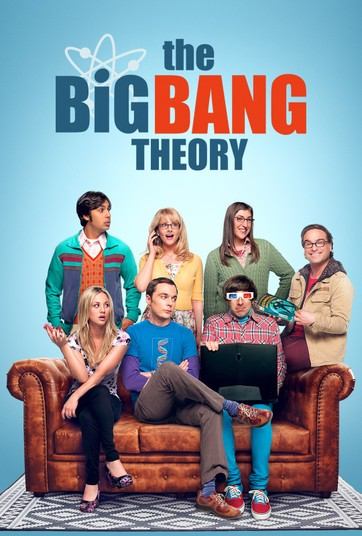
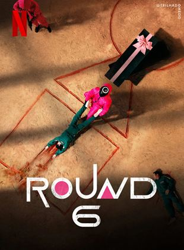
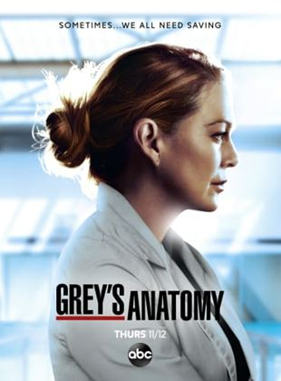

A lendária Laurie (Jamie Lee Curtis), sua filha Karen (Judy Greer) e a neta Allyson (Andi Matichak) acreditavam ter se livrado do assassino Michael Myers, ao deixarem ele preso dentro de um porão em chamas. Em Halloween Kills: O Terror Continua, tanto elas quanto o público irão descobrir que o serial killer sobreviveu e está de volta, mais sedento de sangue e medo do que nunca. Agora, esse trio de mulheres de coragem e um grupo de sobreviventes do psicopata mascarado estarão juntos, numa caçada mortal, para acabar de uma vez por todas com o rastro de horror que ele insiste em deixar. Do mesmo diretor e roteirista do sucesso Halloween (2018), e com os personagens criados por John Carpenter
Em alta

Leonard e Sheldon podem lhe dizer tudo o que você quiser saber sobre física quântica. Mas eles não seriam capazes de lhe dizer nada sobre a vida "real", as relações diárias ou humanas... Mas tudo vai mudar com a chegada da bela vizinha Penny, uma garçonete candidata a atriz que movimentará o grupo de amigos, que conta ainda com as presenças de Howard e Raj, um indiano que não consegue falar com mulheres.
Desde que era pequeno, Sam Winchester (Jared Padalecki) tentava escapar do próprio passsado. Após a misteriosa morte de Mary (Samantha Smith), o pai de Sam passou a procurar vingança contra as forças do mal que mataram a esposa, destruindo qualquer ser maligno que cruze o seu caminho. Ao contrário de Sam, Dean (Jensen Ackles), seu irmão mais velho, sempre quis seguir os passos do pai. Sam parece determinado a se livrar do "negócio da família", mas sua vida está prestes a tomar um rumo indesejado quando não lhe resta outra escolha a não ser se unir ao irmão.

Round 6, série sul-coreana original da Netflix, acompanha um grupo de pessoas desesperadas por dinheiro que recebem um misterioso convite para participar de jogos competitivos inspirados em brincadeiras infantis. Sem saber qualquer coisa sobre o convite, centenas de pessoas comparecem ao local para participar do evento. Ao final do jogo, o vencedor poderá levar para casa um prêmio milionário e resolver todas as suas dívidas. Porém, o que eles não sabem é que os perdedores não saírão vivos desse jogo. Agora os competidores precisarão lutar para sobreviver a essa macabra disputa.

Em Grey's Anatomy, os médicos do Grey Sloan Memorial Hospital/Seattle Grace Hospital lidam diariamente com casos de vida ou morte. É um no outro que eles encontram apoio, conforto, amizade e até mesmo amor. Juntos, eles se esforçam para conciliar os dramas profissionais com os pessoais, descobrindo que ambos podem - e vão - se misturar no meio do caminho. Entre os funcionários do local está Meredith Grey (Ellen Pompeo), filha de um cirurgião conceituado que acaba de entrar para o programa de residência. Ela divide as preocupações do ofício com os internos Cristina Yang (Sandra Oh), Izzie Stevens (Katherine Heigl), Alex Karev (Justin Chambers) e George O'Malley (T. R. Knight). Todos passam pela supervisão de três renomados doutores: Miranda Bailey (Chandra Wilson), uma residente sênior que trabalha para ajudar Derek Shepherd (Patrick Dempsey), chefe de neurocirurgia e interesse amoroso de Grey; Preston Burke (Isaiah Washington), chefe do departamento de cardio e futuro noivo de Yang; e Richard Webber (James Pickens Jr.), chefe de cirurgia e cirurgião geral adjunto. Cada um deles luta para sobreviver em meio a longos expediente e agitados treinamentos, dando o melhor de si nessa carreira tão importante quanto difícil.